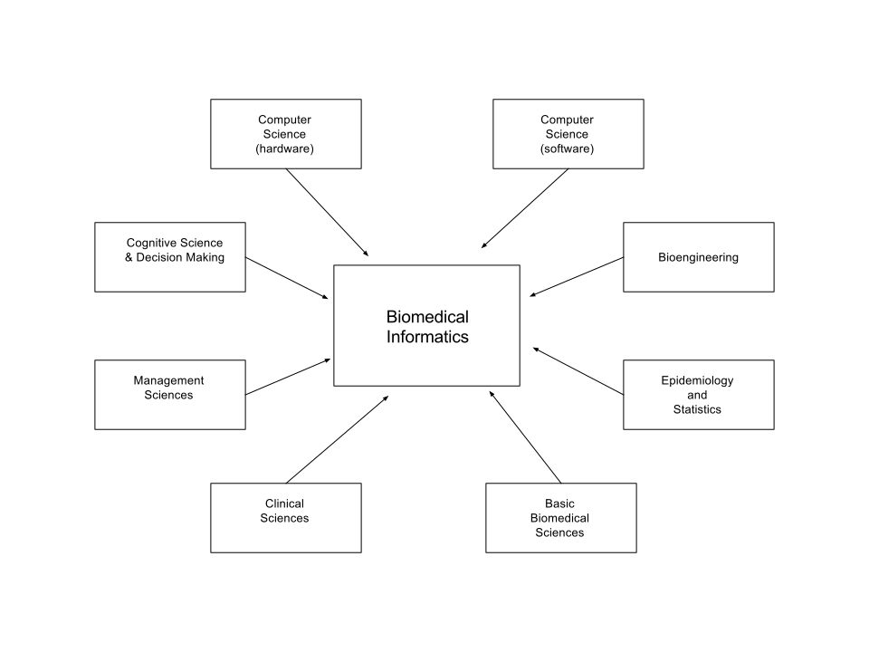
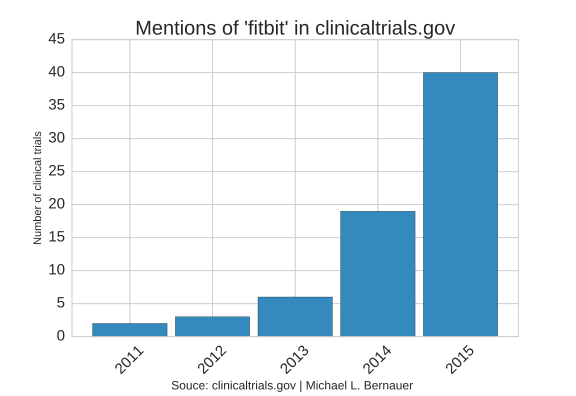

<!doctype html>
<html lang="en">
    <head>
        <meta charset="utf-8">
        <title>Michael L. Bernauer</title>
        <meta name="description" content="A framework for easily creating beautiful presentations using HTML">
        <meta name="author" content="Michael L. Bernauer">
        <meta name="apple-mobile-web-app-capable" content="yes">
        <meta name="apple-mobile-web-app-status-bar-style" content="black-translucent">
        <meta name="viewport" content="width=device-width, initial-scale=1.0, maximum-scale=1.0, user-scalable=no, minimal-ui">
        <link rel="stylesheet" href="../reveal/css/reveal.css">
        <link rel="stylesheet" href="../reveal/css/theme/serif.css" id="theme">
        <!-- Code syntax highlighting -->
        <link rel="stylesheet" href="../reveal/lib/css/zenburn.css">
        <!-- Printing and PDF exports -->
        <script>
            var link = document.createElement( 'link' );
            link.rel = 'stylesheet';
            link.type = 'text/css';
            link.href = window.location.search.match( /print-pdf/gi ) ? '../reveal/css/print/pdf.css' : '../reveal/css/print/paper.css';
            document.getElementsByTagName( 'head' )[0].appendChild( link );
        </script>
        <!--[if lt IE 9]>
        <script src="lib/js/html5shiv.js"></script>
        <![endif]-->
    </head>
    <body>

        <div class="reveal">

            <!-- Any section element inside of this container is displayed as a slide -->
            <div class="slides">
<section data-markdown>
<script type="text/template">
# Biomedical Informatics
<center>
  <cite>
    <i>
      Michael Bernauer<br>
      PharmD Candidate 2016<br>
      University of New Mexico College of Pharmacy
    </i>
  </cite>
</center>
</script>
</section>
<section>
<section data-markdown>
<script type="text/template">
# What is Biomedical Informatics (BMI)
</script>
</section>
<section data-markdown>
<script type="text/template">
## Definition (AMIA)

BMI is the interdisciplinary field that studies and pursues the effective 
use of biomedical data, information, and knowledge for scientific inquiry, problem
solving, and decision making, motivated by efforts to improve human health.
<cite>(*Kulikowski C., et al. JAMIA. 2012*)</cite>

Field that is concerned with the optimal use of information, often aided by the use
of technology and people, to improve individual health, health care, public health, and biomedical
research.
</script>
</section>
<section data-markdown>
<script type="text/template">
## Interdisciplinary
* Draws from fields such as biology, research and clnical medicine, computer science, data science and analytics, statistics, engineering
* Fuzzy boundaries/conceptual overlap between competencies/disciplines

<center></center>
<small>Reproduced from American Medical Informatics Association (http://www.amia.org/about-amia/science-informatics)</small>
</script>
</section>
<section data-markdown>
<script type="text/template">
## The Many Domains of BMI
* **Clincial Informatics**: informatics applied to healthcare (nusring, pharmacy, dentistry, pathology) 
* **Bioinformatics**: informatics in cellular/molecular biology (genomics, chemiformatics)
* **Imaging Informatics**: informatics as applied to imaging, storage and retrieval (radiology)
  * Computer vision/Image analysis and segmentation
* **Consumer Health Informatics**:
  * Remote Monitoring:
    * Wireless Compliance Monitoring
    * Activity trackers/wireless accelerometry
  * Direct-To-Consumer Gentic Testing
    * 23andMe, deCODEme, FamilyTreeDNA
* **Research Informatics**: use of informatics to facilitate biomedical and health research (clinical/translational research)
* **Public Health Informatics**: includes surveillance, reporting and health promotion
  * Surveillance:
    * FDA Adverse Event Reporting System (FAERS)/Vaccine Adverse Event Reporting System (VAERS)
    * PulseNET
* **Health IT Management**: management of medical records
</script>
</section>
</section>
<section>
<section data-markdown>
<script type="text/template">
# Consumer Health Informatics

## (Remote Monitoring)
</script>
</section>
<section data-markdown>
<script type="text/template">
## Activity trackers/Wireless accelerometry
Increasingly being used by clinicians as tool for assessing activity and mobility in outpatient setting
  * Monitoring mobility after major surgery (*Cook D., et al. The Annals of Thoracic Surgery. 2013*)
  * Monitoring physical activity in cardiac patients (*Alharbi M., et al. Eur J Prev Cardio. 2016*)
  * Measurement of gait abnormalities for the purpose of identifying patients with idiopathic normal pressure hydrocephalus (iNPH) (*Galgani S., et al. Cureus. 2015*)
  * 83 hits for 'fitbit in [clincialtrials.gov](http://clinicaltrials.gov)

<center></center>
</script>
</section>
<section data-markdown>
<script type="text/template">
## SmackCAP (Pressure Analysis Company)
* UNM startup
* Skullcap worn during contact sports
* Wireless impact sensors detect and track impacts to the head
* ImPACt scorecard for longitudinal assessment

<center></center>
</script>
</section>
<section data-markdown>
<script type="text/template">
## Wireless Medication Compliance Monitoring
### Problem
* **Adherence**: act of filling/refilling prescriptions on time
* **Compliance**: act of taking medications on schedule or taking medications as prescribed
* Estimated that 50-55% of children and their families do not follow treatment plans as prescribed (*Bovet P. et al. Bulliten of the World Health Organization. 2002*)
* Non-compliance may result in MDRO and increase relapse, morbidity, mortality and rehospitalization resulting in increased healthcare costs

### Solution
* Build a device that allows compliace monitoring and enforcement
* Spark Core $\mu$Controller
  * ARM 32-bit Cortex CPU
  * 128KB flash memory
  * 12 bit ADC
  * IEEE 802.11 b/g compliant wifi module (CC3000)
  * 500mA output current
  * 18 IO
</script>
</section>
<section data-markdown>
<script type="text/template">
## Wireless Medication Monitor
<center></center>
</script>
</section>

<section data-markdown>
<script type="text/template">
# Consumer Health Informatics
## (Direct-To-Consumer Genetics Testing)
</script>
</section>
<section data-markdown>
<script type="text/template">
## 23andMe, deCODEme, FamilyTreeDNA
* Allow consumers to purchase SNP genotypes
* Products include "carrier status" and "wellness" reports
* Disease risk reports pending future FDA approval
</script>
</section>
<section data-background-iframe="https://opensnp.org/statistics">

</section>
<section data-markdown>
<script type="text/template">
## $1,000 Genome Era
<center></center>
</script>
</section>

<section data-markdown>
<script type="text/template">
## OpenSNP background
</script>
</section>
<section data-markdown>
<script type="text/template">
## OpenSNP stats page
</script>
</section>

</section>

        </div>
        <script src="../reveal/lib/js/head.min.js"></script>
        <script src="../reveal/js/reveal.js"></script>
        <script>
            // Full list of configuration options available at:
            // https://github.com/hakimel/reveal.js#configuration
            Reveal.initialize({
                controls: true,
                progress: true,
                history: true,
                center: true,
                transition: 'convex', // none/fade/slide/convex/concave/zoom
                // Optional reveal.js plugins
                dependencies: [
                    { src: '../reveal/lib/js/classList.js', condition: function() { return !document.body.classList; } },
                    { src: '../reveal/plugin/markdown/marked.js', condition: function() { return !!document.querySelector( '[data-markdown]' ); } },
                    { src: '../reveal/plugin/markdown/markdown.js', condition: function() { return !!document.querySelector( '[data-markdown]' ); } },
                    { src: '../reveal/plugin/highlight/highlight.js', async: true, condition: function() { return !!document.querySelector( 'pre code' ); }, callback: function() { hljs.initHighlightingOnLoad(); } },
                    { src: '../reveal/plugin/zoom-js/zoom.js', async: true },
                    { src: '../reveal/plugin/notes/notes.js', async: true },
                    { src: '../reveal/plugin/math/math.js', async: true}
                ]
            });
            Reveal.configure({backgroundTransition: 'zoom'});
        </script>
    </body>
</html>
